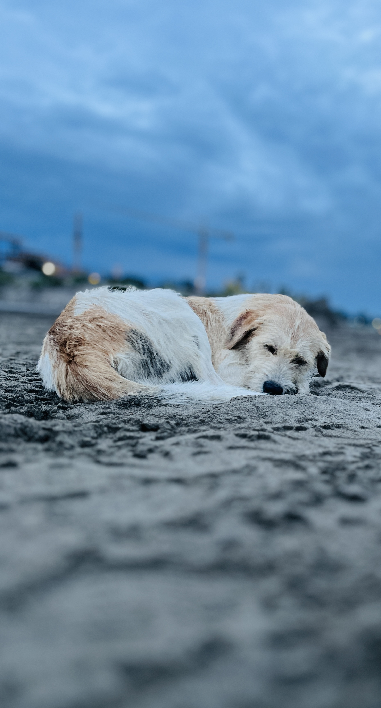
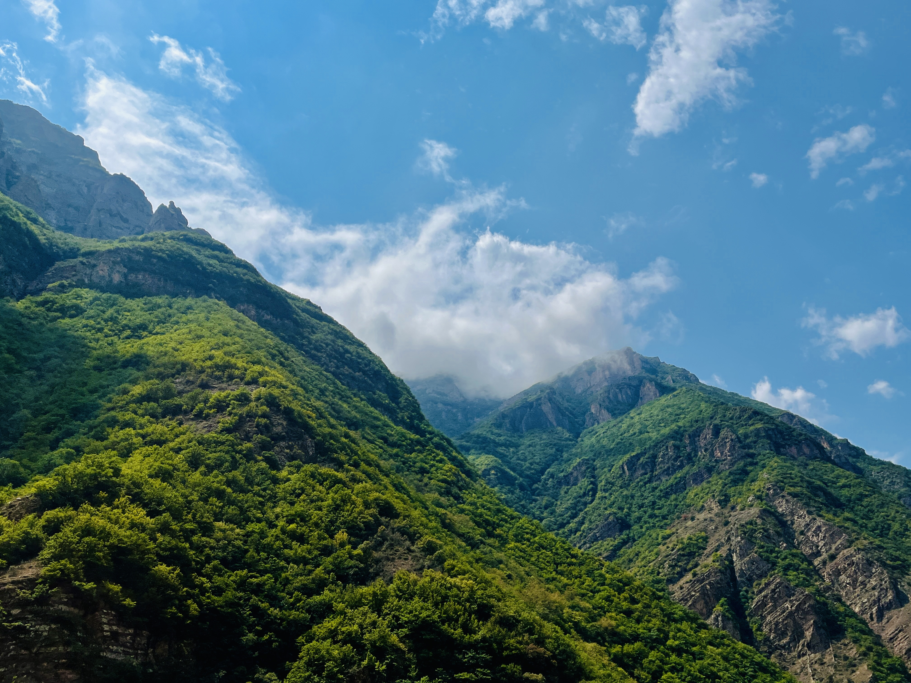
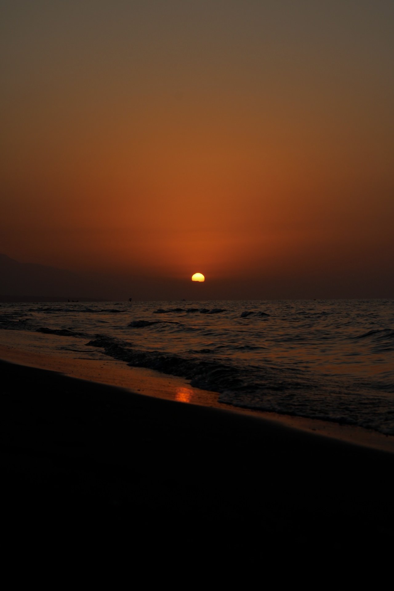
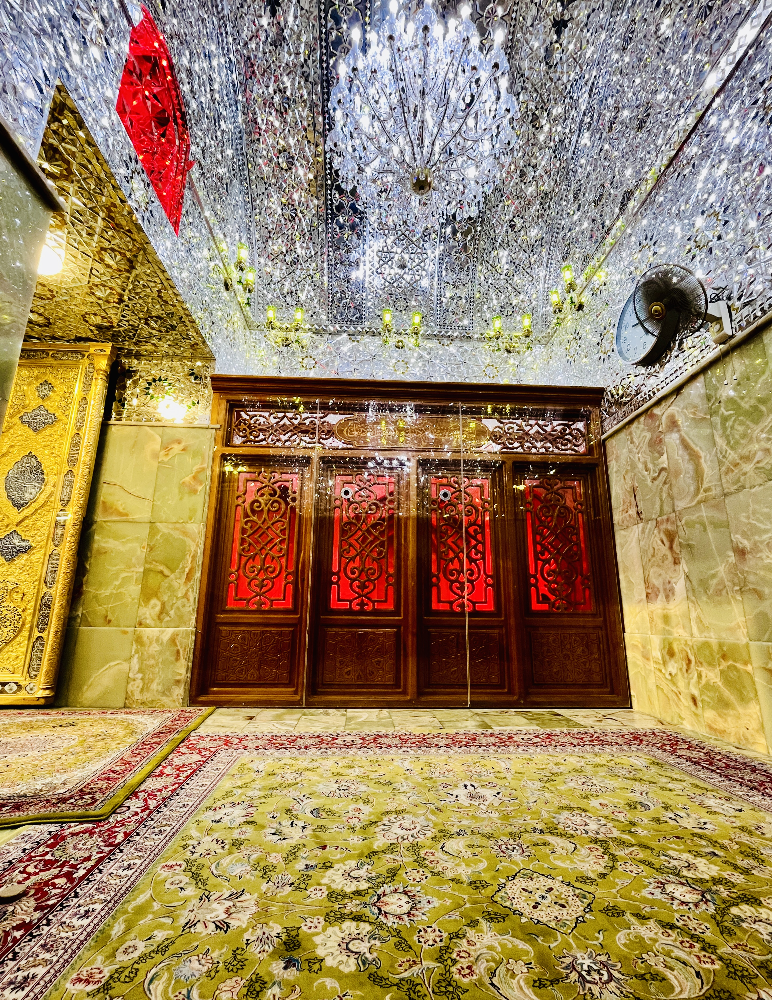
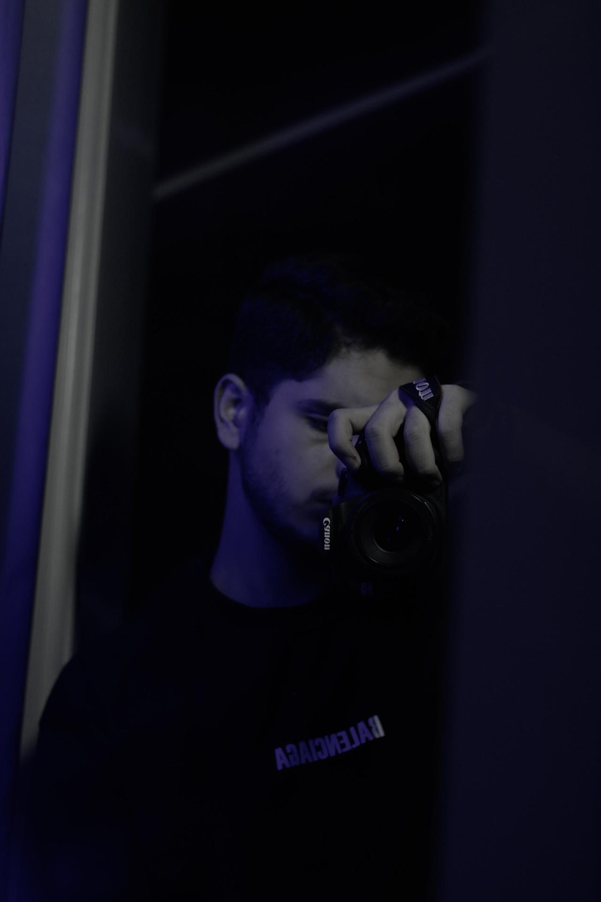

01
Portrait
عکاسی پرتره
من لحظهها را فقط ثبت نمیکنم؛ سعی میکنم احساسی را که در آنها پنهان شده، به تصویر بکشم.
برای من عکاسی فقط فشردن دکمه شاتر نیست. هر نور، هر سایه و هر لحظه میتواند داستانی داشته باشد. اینجا مجموعهای از نگاه من به دنیای اطرافم را میبینی.

عکاسی پرتره

طبیعت و منظره

عکاسی خیابانی

عکاسی خلاقانه
هر قاب، دنیایی فراتر از چیزی که میبینی.


BEHIND THE LENSبه دنیای MoodPicture خوش آمدی. من عاشق کشف زیبایی در لحظههای ساده زندگی هستم. از پرتره گرفته تا طبیعت و خیابان، هر کدام برای من راهی برای بیان یک حس هستند.
این صفحه جایی است برای به اشتراک گذاشتن نگاه من، تجربههایم و عکسهایی که با عشق ثبت کردهام.
بیا بیشتر با هم آشنا شویم ←ثبت شخصیت و احساس واقعی آدمها در قاب تصویر.
نمایش زیبایی طبیعت، نور و لحظههای ناب.
داستانهایی که در شلوغی و سکوت شهر پنهان شدهاند.
نگاهی متفاوت و خلاقانه به سوژهها و دنیای اطراف.
MOODPICTURE — PHOTOGRAPHY
برای همکاری، رزرو عکاسی یا گفتوگو درباره پروژهها از طریق اینستاگرام با من در ارتباط باش.
Instagram ↗@mo_odpictures